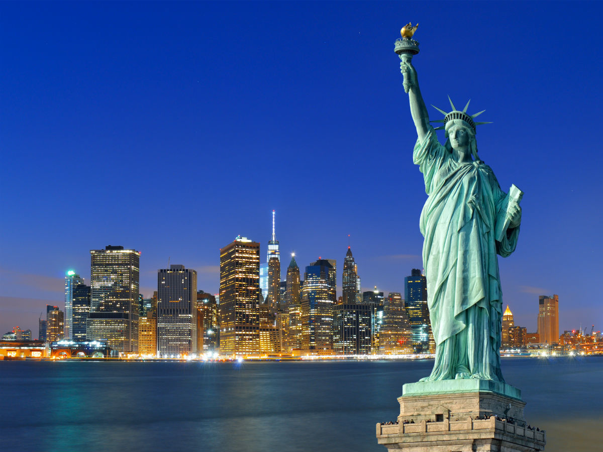
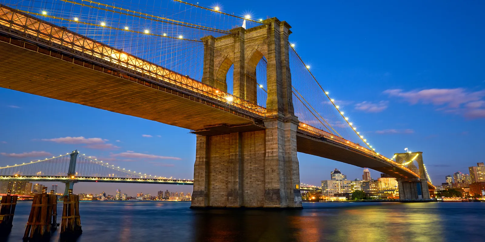

New York, the city that never sleeps, is a must-visit destination for anyone seeking excitement and diversity. From Central Park to Broadway, there's always something happening in this iconic city.
More Photos from New York
Central Park
A massive park in the heart of the city offering nature and recreation.
Broadway
The epicenter of theater and live performances.

Statue of Liberty
A symbol of freedom and democracy, located on Liberty Island.

Brooklyn Bridge
A historic suspension bridge connecting Manhattan and Brooklyn.
Itinerary Suggestions
- Explore Central Park
- Catch a Broadway show
- Visit the Statue of Liberty
- Walk across the Brooklyn Bridge